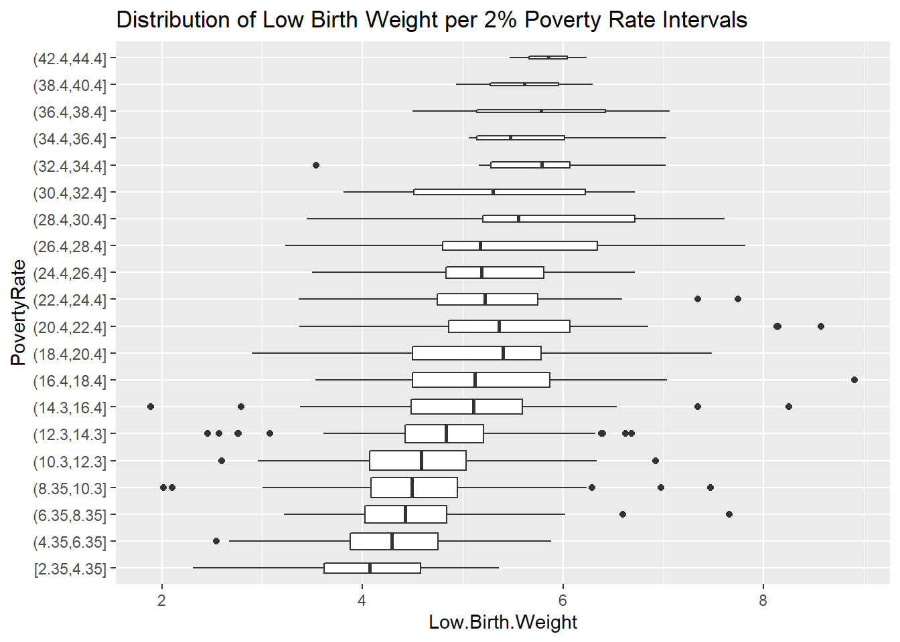
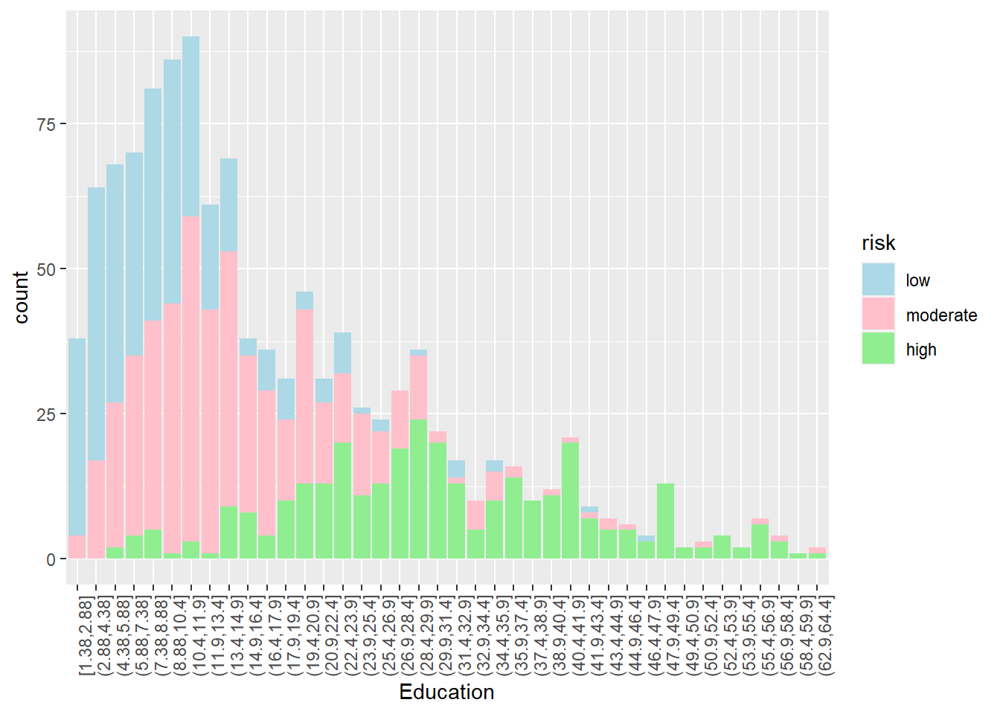
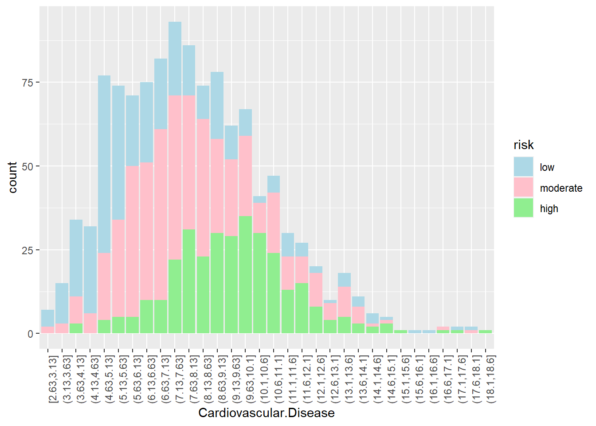
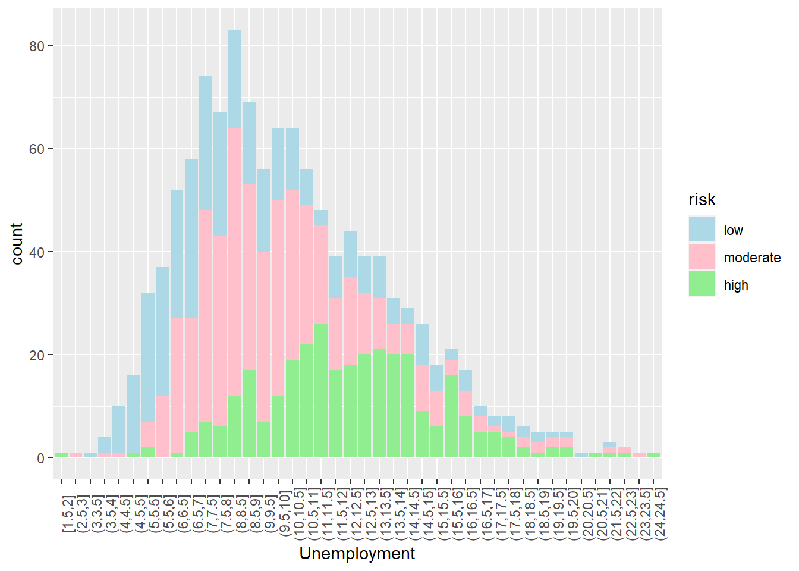

library(corrplot) # for the correlation plot
library(discrim) # for linear discriminant analysis
library(corrr) # for calculating correlation
library(knitr) # to help with the knitting process
library(MASS) # to assist with the markdown processes
library(tidyverse) # using tidyverse and tidymodels for this project mostly
library(tidymodels)
library(ggplot2) # for most of our visualizations
tidymodels_prefer()
library(klaR) # for naive bayes
library(vip) # for variable importance plots
library(dplyr) # for piping and other usesBuilding a Predictive Model on Covid-19 Risk
Using Machine Learning Models to Predict Covid-19 Outbreak Risk in Californian Cities

Introduction
This project is intended to build and deploy a machine learning classification model which categorizes California zip codes into low, moderate, or high risk for Covid-19 outbreaks by the end of the year of 2020. Risk predictions of Covid-19 were made using 21 different predictors including socioeconomic, health, abiotic, and pollution indicators. The intention of this project is to identify the underlying correlations for communities with high rates of Covid-19 cases cumulatively by the end of the year 2020. This project originates from a personal interest in public health and previous studying done on disease dynamics. The machine learning power of these models have the ability to identify underlying correlations between variables very quickly and build predictions upon observations providing much information about communities most heavily affected by this disease.
Packages and Libraries:
What is Covid-19?

According to the World Health Organization Coronavirus disease (COVID-19) is an infectious disease caused by the SARS-CoV-2 virus. Most people infected with the virus will experience mild to moderate respiratory illness and recover without requiring special treatment. Some people become seriously ill and require medical attention. Older people and those with underlying medical conditions are more likely to develop serious illness and hospitalization. COVID-19 can affect people of all ages, including death. The virus can spread from an infected person’s mouth or nose in small liquid particles when they cough, sneeze, speak, sing or breathe. These particles range from larger respiratory droplets to smaller aerosols.
My Data
The data set used for this research project was provided to me by a faculty member, Dr. Andrew MacDonald, who I had the opportunity to work under this summer during an undergraduate research internship. Dr. MacDonald merged data from the LA Times on socioeconomic factors and food access for different Californian zip codes with data reflecting Covid-19 case counts, weather, and pollution levels from the same zip codes during the Covid-19 pandemic in 2020. The original data set contained 268 columns of data.
Predictor Variables:
Mean_Max: Highest recorded temperature in degrees Celsius.Urban: Flag for urban tract.PovertyRate: Share of the tract population living with income at or below the Federal poverty thresholds for family size.MedianFamilyIncome: Tract median family income.Traffic: Traffic density, in vehicle-kilometers per hour per road length, within 150 meters of the census tract boundary.Sold.Waste: Sum of weighted solid waste sites and facilities (SWIS) within buffered distances to populated blocks of census tracts.Asthma: Age-adjusted rate of emergency department visits for asthma.Low.Birth.Weight: Percentage of low birth weights.Cardiovascular.Disease: Age-adjusted rate of emergency department visits for heart attacks per 10,000.Education: Percent of population over 25 with less than a high school education.Linguistic.Isolation: Percent limited English speaking households.Unemployment: Percent of the population over the age of 16 that is unemployed and eligible for the labor force.under_10_.: Percent of the population of the age 10 or younger.Age11_to_64_.: Percent of the population between the ages 11 and 64.over_65_.: Percent of the population of the age 65 or older.Hispanic_.: Percent of the population that is Hispanic.White_.: Percent of the population that is White.African_Am_.: Percent of the population that is African American.Asian_Am_.:Percent of the population that is Asian American.Native_Am_.: Percent of the population that is Native AmericanOther_ethnicity_.: Percent of the population that belongs to an ethnic group not identified above.
Research Questions
- What factors of a population have underlying effects on the number of Covid-19 Cases?
- What kinds of populations are at higher risk for Covid-19 outbreaks?
- Is there evidence of socioeconomic correlation with higher Covid-19 rates?
- Is there evidence of pollution level effects on Covid-19 rates?
Exploratory Data Analysis
The original data set used for this project contained 55,620 observations of 268 variables. In the beginning stages of this project, this data set was tidied, cleaned, and reduced to fewer variables. In the following sections we’ll explore the distribution of our response variable “risk” and look at visualizations of key predictor distributions and relationships between predictors and outbreak risk of Covid-19.
Loading and Exploring Raw Data
The pandemic data set is stored in a .csv format and can be read in from the directory:
setwd("C:/Users/18586/Desktop/PSTAT 131/PSTAT-131-final-project")
pandemic_weekly_og <- read.csv("data/pandemic_weekly.csv")
# changing naming to shorten
pandemic_weekly_og$confirmed_cases <- pandemic_weekly_og$confirmed_cases_fill
pandemic_weekly_og$new_cases <- pandemic_weekly_og$new_cases_fill
# removing repeated columns
pandemic_weekly_og <- pandemic_weekly_og %>%
dplyr::select(-c(confirmed_cases_fill, new_cases_fill))Missing Values:

As we can see, there are few missing values in our original data for these variables, thus a solution to the missing values problem is to just remove them from our data:
pandemic_cum <- pandemic_cum_sub %>%
na.omit()Dimensions of the data:
[1] 55620 268This is a very large data set with 268 variables, of which not all are necessary. Thus the rest of this project will focus on the 21 predictor variables above and the response variable. The variable labeled “confirmed_cases” will be the focus of our predictions. This column contains the cumulative number of positive Covid-19 cases per week in each zip-code during the 2020 year. The data set also contains a variable labeled “new_cases” which contains the new number of positive Covid-19 cases per week during the 2020 year. We can explore these two variables:
Cumulative Cases throughout 2020:

New Cases each week of 2020:

Here we can see that there was a rise in cases around weeks 26 to 35 which are the months June through August. There is another spike following week 46 which is about halfway through November through the rest of the year. This is right around the winter holidays when more people likely stayed indoors and had larger gatherings than just immediate households.
Converting Cumulative Cases into Proportions of Population for a Classification Model
My initial plan for this project was to build a regression model which predicted continuous case counts by the end of 2020 for each zip code. However, I decided to take this a step further and build a classification model which categorized zip codes into low, moderate, or high risk for a Covid-19 outbreak. Covid-19 cumulative case numbers are highly positively correlated with population so I decided to make a new column in the data set of the proportion of a population which has tested positive for Covid-19 by the end of the year 2020.
- Note: A large amount of communities reported 0 cumulative cases by the end of the year 2020. Due to the possibility of this being a lack of reporting by these areas and my interest in only areas affected by the disease, I removed all observations with 0 cumulative cases and thus all observations have at least 1 cumulative case by the end of 2020.


Looking at these two plots, we can see that the distribution of proportions positive Covid-19 cases is highly skewed right with several upper outliers. A summary of this distribution can be given by this table:
Min. 1st Qu. Median Mean 3rd Qu. Max.
0.0000124 0.0172414 0.0310668 0.0392199 0.0530867 0.5750000 As seen above, the proportion of positive cases of Covid-19 in Californian populations affected by the disease ranged from less than 0.001% to almost 60%. Majority of the communities affected by Covid-19 had cumulative positive case rates below 10% of the population.
Choosing Splits for Low, Moderate, and High Risk for Covid-19 Outbreak:
As I was choosing a suitable split for what would be considered low, moderate, or high risk I researched what is considered a “high” amount of cases. According to the World Health Organization a 5% positive rate for weekly tests was considered a threshold for reopening stores and businesses during 2020. Thus, any proportions of Covid-19 cases in a population greater than 5% would be classified as high. For the low split, I decided that 2% would be a decent threshold to separate low and moderate risk. Following this, I then created a variable called “risk” where I classified proportions in each of these intervals into low, moderate, and high risk.
- Note: the World Health Organization specified the the 5% positive rate on weekly tests, whereas this project focuses on cumulative proportions. With the broad assumption that few people contracted Covid-19 a second time during the year 2020, I decided to keep the 5% threshold for high risk.
Proportions of each class in full data set:
low moderate high
0.30 0.42 0.28 There is some class imbalance with only 28% of the observations being categorized as high risk, and only 30% considered low risk, so all models will be stratified on this variable to avoid any prediction problems.
Correlation Between Variables:

This correlation plot tells us a lot of information about the linear relationships between our predictor variables. In particular I found great interest in the high correlations Poverty Rate and Median Family Income had with the following predictor variables: Asthma, Low Birth Weight, Cardiovascular Disease, Education, Linguistic Isolation, Unemployment, Percentage of Population being under 10 years of age, Percentage of Population being Hispanic, and Percentage of Population being White. Three of these variables include medical conditions such as Asthma, Low Birth Weight, and Cardiovascular Disease so I decided to visualize each of these conditions’ relationships with Poverty Rate.
Mean Asthma and Poverty Rate

Looking at these box plots and scatter plots of the relationship between Poverty Rate and Asthma, there appears to be a positive correlation between the two variables. Communities with a higher poverty rate tend to have more asthma-related emergency room visits.
Mean Low Birth Weight and Poverty Rate


Looking at these box plots and scatter plots of the relationship between Poverty Rate and Low Birth Weight, there appears to be a positive correlation between the two variables. Communities with a higher poverty rate tend to have higher rates of low birth weight.
Mean Cardiovascular Disease and Poverty Rate:


Looking at these box plots and scatter plots of the relationship between Poverty Rate and Low Birth Weight, there appears to be a positive correlation between the two variables. Communities with a higher poverty rate tend to have more heart-related emergency room visits. Interestingly, this trend seems to level out when the poverty rate goes past 25%.
Distribution of Risk Levels for Different Predictor Variables:
Hispanic:

Looking at the distribution of Hispanic makeup in Californian communities, there looks to be a correlation between high risk levels of Covid-19 outbreaks in communities with a higher proportion of Hispanics. Communities with lower proportions of Hispanic people tend to be at a moderate or low risk for a Covid-19 outbreak.
White:

Looking at the distribution of White makeup in Californian communities, there looks to be a correlation between high lower levels of Covid-19 outbreaks in communities with a higher proportion of White people. Communities with lower proportions of White people tend to have a higher risk for a Covid-19 outbreak.
Education:

Looking at the distribution of adults without high school degrees in Californian communities, there looks to be a correlation between high risk levels of Covid-19 outbreaks in communities with a higher proportion of adults without a high school degree. Communities with more educated adults tend to be at a moderate or low risk for a Covid-19 outbreak.
Median Family Income:

Looking at the distribution of Median Family Income in Californian communities, there looks to be a correlation between high risk levels of Covid-19 outbreaks in communities with lower median family incomes. Communities with higher median family incomes tend to be at a moderate or low risk for a Covid-19 outbreak.
Cardiovascular Disease:

Looking at the distribution of heart-related emergency room visits in Californian communities, there looks to be a slight correlation between high risk levels of Covid-19 outbreaks in communities with more heart-related emergency room visits. Communities with less heart-related mergency room visits tend to be at a moderate or lower risk for a Covid-19 outbreak.
Unemployment:

Looking at the distribution of Unemployment in Californian communities, there looks to be a correlation between high risk levels of Covid-19 outbreaks in communities with a higher proportion of unemployment. Communities with lower unemployment rates tend to be at a moderate or low risk for a Covid-19 outbreak.
Solid Waste:

Looking at the distribution of Solid Waste in Californian communities, there does not appear to be a correlation between risk levels of Covid-19 outbreaks in communities and solid waste.
Machine Learning Models
In this section I will navigate the steps to building and deploying my 9 machine learning models and their produced results. First we will start with data splitting.
Data Splitting:
When fitting the pandemic data to my machine learning models, I need to split the data into a training and testing/validation set. This allows the models to be trained on a random subset of the data in order to build predictions. Once trained on the training set, each of the models are then used to create predictions on the testing/validation set in order to get a measure of the model accuracies for making predictions on new data. The training and testing validation approach gives us an estimate on how the models will perform on new data the models have not seen yet. In order to split my data into training and testing sets I used a random seed and I have decided to make the proportion of split 80% for the training data and 20% for the testing data. Another important factor in splitting the data is identifying what to stratify the split on, which in my case is the response variable “risk”. As seen in the exploratory analysis, my response variable “risk” is divided into three categories or classes: low, moderate, and high, however there is not an evenly distributed number of observations of each of these classes. According to the exploratory analysis 30% of the responses are low, 42% of the responses are moderate, and only 28% of the responses are high. This class imbalance may result in my models having low predictive power for accurately classifying high and possibly even low risk areas. Stratifying on the risk variable avoids the possibility of a disproportionate amount of each risk class observations ending up in the training or testing sets. After stratifying, both the training and testing sets should have the same 30%, 42%, and 28% distribution of each class.
setwd("C:/Users/18586/Desktop/PSTAT 131/PSTAT-131-final-project/models")
load("pandemic_cum.rda")
set.seed(2002)
pandemic_cum <- pandemic_cum %>%
dplyr::select(-c("prop", "confirmed_cases", "population", "ID_co"))
pandemic_cum_split <- initial_split(pandemic_cum, prop = 0.80, strata = risk)
pandemic_cum_train <- training(pandemic_cum_split)
pandemic_cum_test <- testing(pandemic_cum_split)
low moderate high
0.30 0.42 0.28
low moderate high
0.30 0.42 0.28 Our stratification worked! Now I will discuss an extension of train and test validation: K-Fold Cross Validation.
K-Fold Cross Validation:
Here we are going to use k-fold cross validation in order to estimate the accuracy of each of our models on new data and to tune the models’ hyperparameters. The folds will also be stratified on the outcome variable risk in order to handle the data imbalance. Cross Validation is better at estimating how well our models will perform on new data than a single validation set because it assesses the performance on multiple folds of the data, therefore validating on different combinations of the data and taking into account the variation present.
pandemic_folds <- vfold_cv(pandemic_cum_train, v = 10, strata = risk) # 10-fold CVRecipe:
The recipe for each of my models will use all 21 predictor variables outlined in the introduction along with step codes used to center and scale each of the numerical variables in order to have better performance.
pandemic_cum_rec <- recipe(risk ~ ., data = pandemic_cum_train) %>%
step_dummy(all_nominal_predictors()) %>%
step_normalize(all_predictors())Model Building
In order to make predictions to classify areas into low, moderate, or high risk for Covid-19, I will build and deploy 9 machine learning models each using the same recipe as seen above. For each of these models I will train them on the training set. Each model with hyper-parameters will be tuned using the folded data from the k-fold cross validation. The code used to preprocess the data and build and run each of the models can be found in their respective R markdown files. The following is a description of each of the models used in this project.
Linear Discriminant Analysis (LDA): LDA is a linear method in supervised learning and is a dimensionality reduction technique that works well in multi-class classification problems like the one in this project. LDA looks for linear combinations of the predictor variables in order to create decision boundaries for the response variable. LDA assumes a common covariance matrix for each class of the response variable.Quadratic Discriminant Analysis (QDA): QDA is similar to LDA in that they are both methods in supervised learning that work well in multi-class classification problems. However, unlike LDA, QDA assumes that each class has its own covariance matrix and cannot be used as a dimensionality reduction technique. QDA tends to be more flexible and has more parameters to estimate.Below is a visualization of the differences of LDA and QDA classifiers:

Naive Bayes Classifier: A Naive Bayes Classifier is a probabilistic classifier which uses Bayes’ theorem with strong independence assumptions between the features (or predictor variables).Bayes’ theorem:
K Nearest Neighbors (KNN): The k-nearest neighbors algorithm is a classification method which estimates the likelihood an observation will become a member of a specific response class dependent on which group the k observations nearest to it belong to.Below is a simple visualization of how the algorithm works with two classes.

Single Classification Decision Tree: A single classification decision tree is one tree method which uses a tree structure with a root node, decision nodes, and leaf nodes (predicted classes) to classify an observation based on values of the predictor variables. The algorithm partitions the data set into subsets which contain instances with similar values.Below is a visualization of how a classification decision tree works:

Bootstrap Aggregated Decision Tree (Bagged Tree): A bagged tree is a classification decision tree ensemble method. Multiple decision tree models are used when making predictions. In this algorithm, randomly sampled subsets of the data are created with replacement and are each trained on a single decision tree, then predictions are averaged among each decision tree to output final predictions.Below is a visualization of how bootstrap aggregation works:

Random Forest: Random Forest is another ensemble method which uses multiple classification decision trees and bootstrap aggregation to make predictions. Random Forest is an extension of bagging in that it also randomly selects a certain number of features in each data subset. Random Forest works to minimize variance and overfitting of the data.Below is a visualization of how a random forest model works:

Extreme Gradient Boosted Tree (XGBoost): XGBoost is another decision tree ensemble learning algorithm which uses multiple decision trees to make classification predictions. The difference between random forest and XGBoost however is that XGBoost uses gradient boosting where the process of additively generating weak models is formalized as a gradient descent algorithm. Gradient boosting has targeted outcomes for the next decision tree in order to improve accuracy. Targeted outcomes for each case are based on the gradient of the error with respect to the prediction. The final prediction is a weighted sum of all of the tree predictions. XGBoost works to minimize bias and underfitting of the data.Below is a visualization of how XGBoost works:

Elastic-Net Regression: Elastic-Net Regression is a regularized regression method which linearly combines the penalties of lasso and ridge regression methods. The parameters associated with correlated variables are grouped and their coefficients are shrunk toward zero (relative to least squares) and used in a regression equation to predict the class outcomes.Below is a visualization of how Lasso and Ridge Regularization work:

After assessing the performance of each of these models on the training data, I will compare their performances evaluated on the Area Under the Receiver Operating Characteristic Curve (ROC AUC) because this metric is a better assessment of imbalanced data than accuracy is. Following this I will identify the three best models and assess their performance on the testing.
Linear Discriminant Analysis:
The first model I trained was a Linear Discriminant Analysis model. Here is how I fit the model and used cross-validation to assess its performance:
# specifying an LDA model using MASS engine and classification mode
lda_mod <- discrim_linear() %>%
set_mode("classification") %>%
set_engine("MASS")
# adding model to workflow
lda_wkflow <- workflow() %>%
add_model(lda_mod) %>%
add_recipe(pandemic_cum_rec)
# fit model to folds
lda_fit_cum_folds <- fit_resamples(lda_wkflow, pandemic_folds)Performance Across Folds:
# A tibble: 2 × 6
.metric .estimator mean n std_err .config
<chr> <chr> <dbl> <int> <dbl> <chr>
1 accuracy multiclass 0.693 10 0.0148 Preprocessor1_Model1
2 roc_auc hand_till 0.864 10 0.00810 Preprocessor1_Model1I then fit the LDA model to the entire training set and evaluated its performance by looking at the following:
Accuracy:
# A tibble: 1 × 3
.metric .estimator .estimate
<chr> <chr> <dbl>
1 accuracy multiclass 0.716Area Under the ROC Curve:
# A tibble: 1 × 3
.metric .estimator .estimate
<chr> <chr> <dbl>
1 roc_auc hand_till 0.878ROC Curve for each Class:
Quadratic Discriminant Analysis:
The second model I trained was a Quadratic Discriminant Analysis model. Here is how I fit the model and used cross-validation to assess its performance:
# specifying an QDA model using MASS engine and classification mode
qda_mod <- discrim_quad() %>%
set_mode("classification") %>%
set_engine("MASS")
# adding model to workflow
qda_wkflow <- workflow() %>%
add_model(qda_mod) %>%
add_recipe(pandemic_cum_rec)
# fit model to folds
qda_fit_cum_folds <- fit_resamples(qda_wkflow, pandemic_folds)Performance Across Folds:
# A tibble: 2 × 6
.metric .estimator mean n std_err .config
<chr> <chr> <dbl> <int> <dbl> <chr>
1 accuracy multiclass 0.674 10 0.00999 Preprocessor1_Model1
2 roc_auc hand_till 0.836 10 0.00914 Preprocessor1_Model1I then fit the QDA model to the entire training set and evaluated its performance by looking at the following:
Accuracy:
# A tibble: 1 × 3
.metric .estimator .estimate
<chr> <chr> <dbl>
1 accuracy multiclass 0.729Area Under the ROC Curve:
# A tibble: 1 × 3
.metric .estimator .estimate
<chr> <chr> <dbl>
1 roc_auc hand_till 0.868ROC Curve for each Class:
Naive Bayes:
The third model I trained was a Naive Bayes Classifier. Here is how I fit the model and used cross-validation to assess its performance:
#specifying naive bayes model using klaR engine and classification mode
nb_mod <- naive_Bayes() %>%
set_mode("classification") %>%
set_engine("klaR") %>%
set_args(usekernel = FALSE)
# adding model to workflow
nb_wkflow <- workflow() %>%
add_model(nb_mod) %>%
add_recipe(pandemic_cum_rec)
# fit model to folds
nb_fit_folds <- fit_resamples(nb_wkflow, pandemic_folds)Performance Across Folds:
# A tibble: 2 × 6
.metric .estimator mean n std_err .config
<chr> <chr> <dbl> <int> <dbl> <chr>
1 accuracy multiclass 0.664 10 0.0112 Preprocessor1_Model1
2 roc_auc hand_till 0.841 10 0.00664 Preprocessor1_Model1I then fit the Naive Bayes model to the entire training set and evaluated its performance by looking at the following:
Accuracy:
# A tibble: 1 × 3
.metric .estimator .estimate
<chr> <chr> <dbl>
1 accuracy multiclass 0.676Area Under the ROC Curve:
# A tibble: 1 × 3
.metric .estimator .estimate
<chr> <chr> <dbl>
1 roc_auc hand_till 0.851ROC Curve for each Class:
K-Nearest Neighbors:
The fourth model I trained was a K-Nearest Neighbors model with 10 neighbors. Here is how I fit the model and used cross-validation to assess its performance:
# specifying knn model using kknn engine, classification mode, rectangular weight function, and neighbors
knn_model <- nearest_neighbor(
mode = "classification",
engine = "kknn",
neighbors = 10,
weight_func = "rectangular",
dist_power = NULL
)
# adding model to workflow
knn_wflow_cum <- workflow() %>%
add_model(knn_model) %>%
add_recipe(pandemic_cum_rec)
# fit model to folds
knn_fit_cum_folds <- fit_resamples(knn_wflow_cum, pandemic_folds)Performance Across Folds:
# A tibble: 2 × 6
.metric .estimator mean n std_err .config
<chr> <chr> <dbl> <int> <dbl> <chr>
1 accuracy multiclass 0.694 10 0.0129 Preprocessor1_Model1
2 roc_auc hand_till 0.860 10 0.00735 Preprocessor1_Model1I then fit the K-Nearest Neighbor model to the entire training set and evaluated its performance by looking at the following:
Accuracy:
# A tibble: 1 × 3
.metric .estimator .estimate
<chr> <chr> <dbl>
1 accuracy multiclass 0.747Area Under the ROC Curve:
# A tibble: 1 × 3
.metric .estimator .estimate
<chr> <chr> <dbl>
1 roc_auc hand_till 0.912ROC Curve for each Class:

Single Decision Tree:
The fifth model I trained was a Single Decision Tree. Here is how I fit the model and used cross-validation to tune the cost_complexity() parameter and asses its performance.
Note:
cost_complexity()is a hyper-parameter used to control the size of the decision tree and to select the optimal tree size which reduces error.
# specifying decision tree model using rpart engine and classification mode
tree_spec <- decision_tree() %>%
set_engine("rpart")
class_tree_spec <- tree_spec %>%
set_mode("classification")
# adding model to workflow and tuning cost_complexity
class_tree_wf <- workflow() %>%
add_model(class_tree_spec %>% set_args(cost_complexity = tune())) %>%
add_recipe(pandemic_cum_rec)
# parameter search grid
param_grid <- grid_regular(cost_complexity(range = c(-3, 0)), levels = 10)
# specifying roc_auc metric and folds
tune_res_st <- tune_grid(
class_tree_wf,
resamples = pandemic_folds,
grid = param_grid,
metrics = metric_set(roc_auc)
)Performance on different Cost Complexity levels:

Looking at Visualization of Decision Tree:

I then fit the Single Decision Tree model to the entire training set using the best cost complexity parameter and evaluated its performance by looking at the following:
Accuracy:
# A tibble: 1 × 3
.metric .estimator .estimate
<chr> <chr> <dbl>
1 accuracy multiclass 0.824Area Under the ROC Curve:
# A tibble: 1 × 3
.metric .estimator .estimate
<chr> <chr> <dbl>
1 roc_auc hand_till 0.929ROC Curve for each Class:
Bootstrap Aggregated Tree:
The sixth model I trained was a Bootstrap Aggregated (Bagged) Decision Tree. Here is how I fit the model and used cross-validation to tune the cost_complexity() parameter and asses its performance:
Note:
cost_complexity()is a hyper-parameter used to control the size of the decision tree and to select the optimal tree size which reduces error.
# specifying decision tree model using randomForest engine and classification mode
bagging_spec <- rand_forest(mtry = .cols()) %>%
set_engine("randomForest", importance = TRUE) %>%
set_mode("classification")
# adding model to workflow and tuning cost_complexity
bag_wf <- workflow() %>%
add_model(bagging_spec %>% set_args(cost_complexity = tune())) %>%
add_recipe(pandemic_cum_rec)
# parameter search grid
param_grid <- grid_regular(cost_complexity(range = c(-3, 0)), levels = 10)
# specifying roc_auc metric and folds
tune_res_bag <- tune_grid(
bag_wf,
resamples = pandemic_folds,
grid = param_grid,
metrics = metric_set(roc_auc)
)Variable Importance Plot:
For the Bagged Tree model, the top three most important predictor variables were Hispanic_., Cardiovascular.Disease, and Mean_Tmax.
I then fit the Bagged Tree model to the entire training set using the best cost complexity parameter and evaluated its performance by looking at the following:
Accuracy:
# A tibble: 1 × 3
.metric .estimator .estimate
<chr> <chr> <dbl>
1 accuracy multiclass 1Area Under the ROC Curve:
# A tibble: 1 × 3
.metric .estimator .estimate
<chr> <chr> <dbl>
1 roc_auc hand_till 1ROC Curve for each Class:

Random Forest:
The seventh model I trained was a Random Forest. Here is how I fit the model and used cross-validation to tune the mtry(), trees(), and min_n() parameters and asses its performance:
Note:
mtry()is a hyper-parameter used to control the number of random set of predictors used in a single decision tree.trees()is a hyper-parameter used to control how many trees are used in the ensemble.min_n()is a hyper-parameter used to control the minimum number of data points in a node needed for the node to be split further.
# specifying random forest model using ranger engine and classification mode. Also identifying which parameters to tune
rf_spec <- rand_forest(mtry = tune(), trees = tune(), min_n = tune()) %>%
set_engine("ranger", importance = "impurity") %>%
set_mode("classification")
# adding model to workflow
tune_wf <- workflow() %>%
add_recipe(pandemic_cum_rec) %>%
add_model(rf_spec)
# parameter search grid
rf_grid <- grid_regular(mtry(range = c(2, 21)), trees(range = c(6, 10)), min_n(range = c(3, 5)), levels = 10)
# specifying roc_auc metric and folds
set.seed(2002)
tune_res_rf <- tune_grid(
tune_wf,
resamples = pandemic_folds,
grid = rf_grid,
metrics = metric_set(roc_auc)
)Performance on different Cost Complexity levels:
Variable Importance Plot:

For the Random Forest model, the top three most important predictor variables were Hispanic_., Education, and Mean_Tmax.
I then fit the Random Forest model to the entire training set using the best parameter set and evaluated its performance by looking at the following:
Accuracy:
# A tibble: 1 × 3
.metric .estimator .estimate
<chr> <chr> <dbl>
1 accuracy multiclass 0.969Area Under the ROC Curve:
# A tibble: 1 × 3
.metric .estimator .estimate
<chr> <chr> <dbl>
1 roc_auc hand_till 0.997ROC Curve for each Class:

Extreme Gradient Boosting:
The eighth model I trained was an XGBoost model. Here is how I fit the model and used cross-validation to tune the mtry(), trees(), and min_n() parameters and asses its performance:
Note:
mtry()is a hyper-parameter used to control the number of random set of predictors used in a single decision tree.trees()is a hyper-parameter used to control how many trees are used in the ensemble.min_n()is a hyper-parameter used to control the minimum number of data points in a node needed for the node to be split further.learn_rate()is a hyper-parameter used to control how fast the model learns and determines the step size at each iteration while moving toward a minimum of a loss function.
# specifying XGBoost model usingxgboost engine and classification mode. Also identifying which parameters to tune
xgb_spec <-
boost_tree(
mtry = tune(),
trees = tune(),
min_n = tune(),
learn_rate = tune()
) %>%
set_engine('xgboost') %>%
set_mode('classification')
# adding model to workflow
xgb_wflow <-
workflow() %>%
add_recipe(pandemic_cum_rec) %>%
add_model(xgb_spec)
# parameter search grid
xgb_grid <- grid_regular(mtry(range = c(2, 21)), trees(range = c(6, 10)), min_n(range = c(3, 5)), learn_rate(range = c(0.0001, 0.1)), levels = 8)
# specifying roc_auc metric and folds
set.seed(2002)
xgb_res <-
tune_grid(
xgb_wflow,
resamples = pandemic_folds,
grid = xgb_grid,
metrics = metric_set(roc_auc)
)Performance on different parameter levels:
Variable Importance Plot:
For the XGBoost model, the top three most important predictor variables were under_10_., Education, and Mean_Tmax.
I then fit the XGBoost model to the entire training set using the best parameter set and evaluated its performance by looking at the following:
Accuracy:
# A tibble: 1 × 3
.metric .estimator .estimate
<chr> <chr> <dbl>
1 accuracy multiclass 0.990Area Under the ROC Curve:
# A tibble: 1 × 3
.metric .estimator .estimate
<chr> <chr> <dbl>
1 roc_auc hand_till 1.00ROC Curve for each Class:

Elastic-Net Regression:
The ninth model I trained was an Elastic-Net Regression model. Here is how I fit the model and used cross-validation to tune the penalty() and mixture() parameters and assess its performance:
Note:
penalty()is a hyper-parameter used to control the amount of shrinkage of coefficients in the regression.mixture()is a hyper-parameter used to control .
# specifying multinomial regression model using glmnet engine and classification mode. Also identifying which parameters to tune
elastic_spec <-
multinom_reg(penalty = tune(), mixture = tune()) %>%
set_mode("classification") %>%
set_engine("glmnet")
# adding model to workflow
elastic_workflow <- workflow() %>%
add_recipe(pandemic_cum_rec) %>%
add_model(elastic_spec)
# parameter search grid
penalty_grid <- grid_regular(penalty(range = c(-6, 6)), mixture(range = c(0,1)), levels = 15)
# specifying roc_auc metric and folds
set.seed(2002)
tune_res_elastic <- tune_grid(
elastic_workflow,
resamples = pandemic_folds,
grid = penalty_grid
)Performance on different parameter levels:

I then fit the Elastic-Net Regression model to the entire training set using the best parameter set and evaluated its performance by looking at the following:
Accuracy:
# A tibble: 1 × 3
.metric .estimator .estimate
<chr> <chr> <dbl>
1 accuracy multiclass 0.720Area Under the ROC Curve:
# A tibble: 1 × 3
.metric .estimator .estimate
<chr> <chr> <dbl>
1 roc_auc hand_till 0.877ROC Curve for each Class:

Comparing Model Performance
Now I would like to compare the performance of each of my models based on their Accuracy and AUC, however the model I choose as my best will be based only on the AUC performance.
Model Accuracy:
Accuracy models
1 1.0000000 Bagged Tree
2 0.9902280 XGBoost
3 0.9685125 Random Forest
4 0.8241042 Single Decision Tree
5 0.7470141 KNN
6 0.7285559 QDA
7 0.7198697 Elastic-Net Regression
8 0.7155266 LDA
9 0.6764387 Naive BayesThe Bagged Tree model had the highest accuracy of 1.00, followed by XGBoost with an accuracy of 0.9902280, followed by Random Forest with an accuracy of 0.9685125, and a Single Decision Tree with an accuracy of 0.8241042.
Model Area Under the Receiver Operator Characteristic Curve:
AUC models
1 1.0000000 Bagged Tree
2 0.9997908 XGBoost
3 0.9972315 Random Forest
4 0.9287136 Single Decision Tree
5 0.9121782 KNN
6 0.8778239 LDA
7 0.8765599 Elastic-Net Regression
8 0.8678246 QDA
9 0.8509473 Naive BayesBar Plot of Model ROC AUC:
The Bagged Tree model had the highest AUC of 1, followed by XGBoost with an AUC of 0.9997908, followed by Random Forest with an AUC of 0.9972315, and a Single Decision Tree with an AUC of 0.9287136. Again I will be basing model performance off of AUC due to the imbalance of data.
Comparing Top Three Model Performance on Testing Data:
Now let’s see how the top performing models perform on the testing data.
Model Accuracy on Testing Data:
# A tibble: 3 × 2
Accuracy models
<dbl> <chr>
1 0.720 XGBoost
2 0.707 Bagged Tree
3 0.707 Random ForestAUC on Testing Data:
# A tibble: 3 × 2
AUC models
<dbl> <chr>
1 0.896 Bagged Tree
2 0.878 Random Forest
3 0.873 XGBoost Best Model: Bagged Tree
With an AUC of 0.8958979, the best model I built was the Bagged Tree Model.
We can take a close look at a confusion matrix of the bagged tree model’s performance on the testing data.
We can also take another look at the Variable Importance Plot again to see which variables were the most influential in categorizing communities into their risk levels.

Next I want to deploy the model on the entire data set and match risk predictions to “ID_co” which is a variable in the original data set which identifies the community the data came from.
Communities Predicted to be at High Risk
# A tibble: 310 × 3
.pred_class risk ID_co
<fct> <fct> <chr>
1 high moderate 90802_37
2 high high 90805_37
3 high high 90806_37
4 high high 90813_37
5 high high 91103_37
6 high high 91911_73
7 high high 91950_73
8 high high 92113_73
9 high high 92154_73
10 high high 92173_73
# … with 300 more rowsThe model predicts these 310 communities in the original data to be at high risk for a Covid-19 outbreak at the end of the year 2020
Communities Incorrectly Classified:
# A tibble: 68 × 3
.pred_class risk ID_co
<fct> <fct> <chr>
1 high moderate 90802_37
2 moderate high 90810_37
3 moderate low 91362_111
4 low moderate 92109_73
5 low moderate 92110_73
6 moderate low 92116_73
7 low moderate 92117_73
8 high moderate 93015_111
9 low moderate 93220_29
10 low moderate 93224_29
# … with 58 more rowsThe model incorrectly classified 68 communities
Communities Correctly Classified:
# A tibble: 1,085 × 3
.pred_class risk ID_co
<fct> <fct> <chr>
1 moderate moderate 90803_37
2 moderate moderate 90804_37
3 high high 90805_37
4 high high 90806_37
5 moderate moderate 90807_37
6 moderate moderate 90808_37
7 high high 90813_37
8 moderate moderate 90814_37
9 moderate moderate 90815_37
10 moderate moderate 91101_37
# … with 1,075 more rowsThe model correctly classified 1085 communities.
Confusion Matrix, Accuracy, and AUC on Full Data Set
# A tibble: 1 × 3
.metric .estimator .estimate
<chr> <chr> <dbl>
1 accuracy multiclass 0.941# A tibble: 1 × 3
.metric .estimator .estimate
<chr> <chr> <dbl>
1 roc_auc hand_till 0.989These results may appear to be excellent but we have to remember that this model was trained on 80% of the original data set so this is what is known as overfitting, and we would expect to see such high accuracy on this data.
Conclusion
After exploring this data of different communities in California and fitting several machine learning models to predict Covid-19 outbreak risk, I have found that the Bootstrap Aggregated Decision Trees model performs the best according to Area Under the Receiver Operator Curve. Using this model, I found that the top five predictor variables for classifying communities into risk classifications are: Hispanic_., Education, Mean_Tmax, Cardiovascular.Disease, and under_10_..
Through exploratory data analysis I found that there is a large correlation between socioeconomic factors such as poorer education, high poverty rate, low median family income, and linguistic isolation and high risk for Covid-19 outbreaks. These relationships point to how communities struggling with more socioeconomic problems are at a disproportionate risk for Covid-19 outbreaks. As a result of this project, I would consider the Covid-19 pandemic a public health concern as well as a socioeconomic concern.
To expand upon this project without the time constraints, I believe a beneficial extension would be to match the locations of all the observations in my data set to coordinate points in an attempt to create a map of California with shading to spatially visualize where low, moderate, and high outbreak risk would be. I would also like to use this model on data from 2021 and 2022 to see the changes in risk level for each year and test the model’s accuracy on more data.